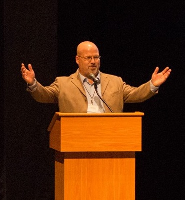

COMM_2064: Rhetoric Tradition
Instructor: Buddy Howell
Awards and Honors:
Dr. and Mrs. Philip J. Sporn Award for Teaching: Excellence in Teaching Introductory Courses (Finalist), Virginia Tech
Research Interest:
Reagan at the Summit: Presidential Public Diplomacy and the Collapse of Soviet Communism (monograph in process for submission to Michigan State University Press).
Selected Publications:
Books: B. Wayne Howell, "Reagan and Reykjavík: Arms Control, SDI, and the Argument from Human Rights," Rhetoric & Public Affairs, 11 (Fall 2008): 389-415.
Course Introduction:
This course examines the origins of the rhetorical tradition in the Western world from ancient Athens through the twenty-first century. In contemporary conversations, as well as in the mass media, the term “rhetoric” often connotes “empty talk,” “manipulation,” or “propaganda.”
My opinion:
This is one of my favorite classes of this semester. It is important for a Communication major student to understand the historical development of rhetoric. It is a major requiremnt class, and I enjoy it very much!